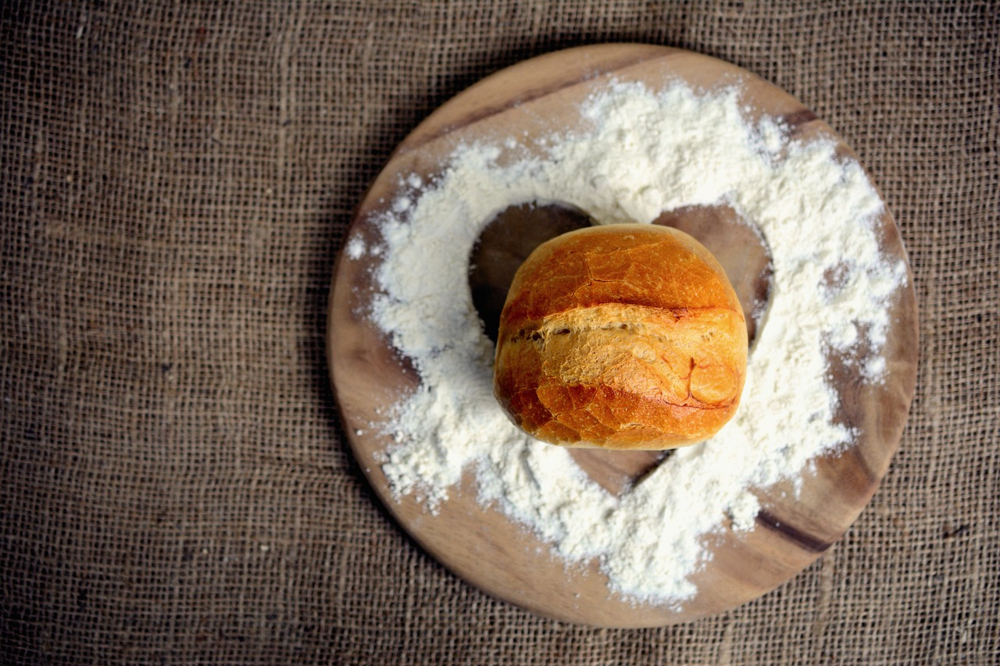

Crossaints sind ein sehr beliebstes Gebäck. Doch viele möchten sich den Aufwand nicht antun.
Wir zeigen Ihnen eine Möglichkeit, wie Sie in nur 30 Minuten leckere, warme Crossaints zuhause genießen können.
Lust auf was Neues?
Frische Waffeln
Brötchen
Zimtschnecken
Wissenwertes über Crossaints
Es gibt viele verschiedene Varianten von Croissants. Damit Ihnen nie langweilig mit den Croissants wird, hier nun ein paar Beispiele:
Plain Crossant (Buttercrossant),
Plain au Chocolat (Schokoladencrossant),
Crossain aux Amandes(Mandelcrossant),
Ham and Cheese Crossant(Schinken-Käse-Crossant),
Pistachio Crossant(Pistaziencrossant),
Berry-Crossant(Beeren-Crossant),

 Zimtschnecken
Zimtschnecken